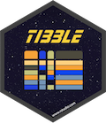

![[Stable]](../help/figures/lifecycle-stable.svg)
| tibble-package {tibble} | R Documentation |

Provides a 'tbl_df' class (the 'tibble') with stricter checking and better formatting than the traditional data frame.
The tibble package provides utilities for handling tibbles, where
"tibble" is a colloquial term for the S3 tbl_df class. The tbl_df
class is a special case of the base data.frame.
class, developed in response to lessons learned over many years of data
analysis with data frames.
Tibble is the central data structure for the set of packages known as the tidyverse, including dplyr, ggplot2, tidyr, and readr.
General resources:
Website for the tibble package: https://tibble.tidyverse.org
Tibbles chapter in R for Data Science
Resources on specific topics:
Create a tibble: tibble(), as_tibble(), tribble(), enframe()
Inspect a tibble: print.tbl(), glimpse()
Details on the S3 tbl_df class: tbl_df
Package options: tibble_options
Maintainer: Kirill Müller krlmlr+r@mailbox.org
Authors:
Hadley Wickham hadley@rstudio.com
Other contributors:
Romain Francois romain@r-enthusiasts.com [contributor]
Jennifer Bryan jenny@rstudio.com [contributor]
RStudio [copyright holder]
Useful links:
Report bugs at https://github.com/tidyverse/tibble/issues